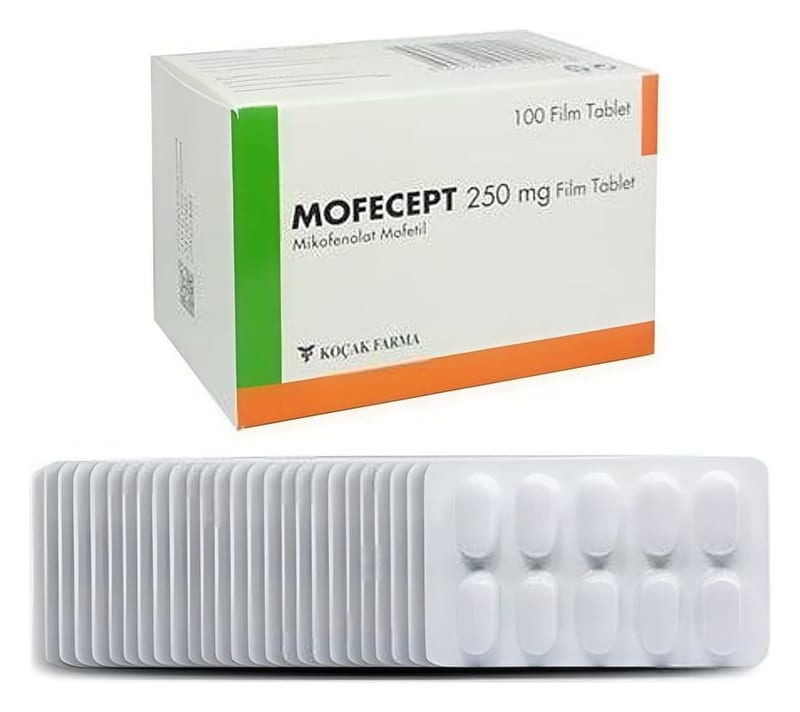

Mofecept 250 mg Film Kaplı Tablet, 300 Adet

Ne için kullanılır
KT · Bölüm 1MOFECEPT 250 mg mikofenolat mofetil içeren film kaplı tabletler halindedir.
MOFECEPT, vücutta bulunan ve inozin monofosfat dehidrogenaz (IMPDH) adı verilen bir enzimin çalışmasını engelleyerek etki eder, bağışıklık sistemini baskılar (immünosupresandır).
MOFECEPT 100 ve 300 film kaplı tablet içeren ambalajlarda bulunmaktadır.
MOFECEPT, size nakledilmiş böbrek, kalp veya karaciğerin vücudunuz tarafından reddini önlemek için kullanılır. MOFECEPT, bir kalsinörin inhibitörü (MOFECEPT gibi, organ naklinden sonra vücudun reddini engelleyen bağışıklık sistemini baskılayıcı ilaçlar) veya
kortikosteroidle (vücutta böbrek üstü bezlerinden salgılanan bir hormon olan kortizole benzer yapıda ilaçlar) aynı anda kullanılabilir.